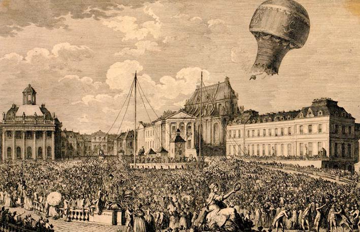

Historia
El antiguo sueño humano de viajar por el aire se hizo realidad en 1783, gracias a los globos de aire caliente y de hidrógeno inventados por los hermanos Montgolfier y por Charles y Robert
Los creadores
Los hermanos Joseph y Jacques Montgolfier realizaron la primera demostración pública de su invento el 4 de junio de 1782 en Francia. Su sueño de llegar hasta el cielo se hizo realidad. Después de varios experimentos, comprendieron que el aire caliente es más liviano que el frío, por lo que tiende a subir. Decidieron crear una máquina que permitiera volar con este principio. Joseph y Jacques Montgolfier lanzaron su primer modelo en septiembre de 1782.
El primer vuelo
Después de muchos intentos, los hermanos Montgolfier crearon un globo hecho de seda y papel que contaba con 10 metros de diámetro. Éste fue presentado el día 4 de junio de 1783 y lanzado en el mercado de Annonay para que toda la gente pudiera ver lo que habían creado. Afortunadamente el globo ascendió entre 1,600 y 2,000 metros y la gente quedó asombrada.
